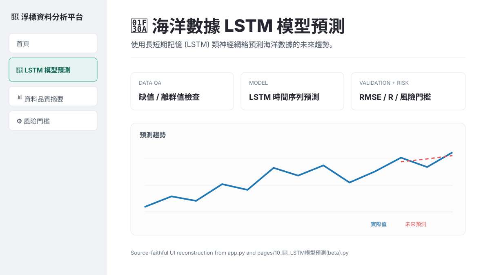

01 / Problem
真實海洋資料不是乾淨的訓練集。
浮標資料會遇到缺值、異常值、不同時間尺度與測站差異。如果直接餵給模型，預測數字本身不等於可用決策，因此專案把資料品質與風險判讀都放進產品流程。
02 / Pipeline
從 Data QA 到可操作介面
Raw Buoy Data→Data QA→Preprocess→LSTM→Validation→Risk Rules→Streamlit UI
03 / Engineering
04 / UI
Streamlit 作為分析產品層
介面負責測站選擇、分析功能、模型參數、訓練進度與結果呈現。首頁採 wide layout，專案另包含測站地圖、資料探索、統計、熱力圖、相關性、風玫瑰圖與模型預測等功能模組。

05 / What I learned
模型只是系統中的一段。
真正可用的資料產品還需要輸入品質、驗證方式、快取、風險規則與 UI。這個專案的價值在於把這些環節接成完整流程。